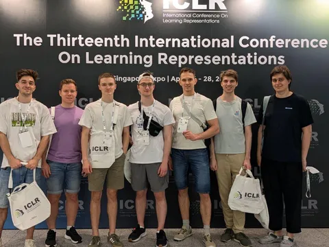
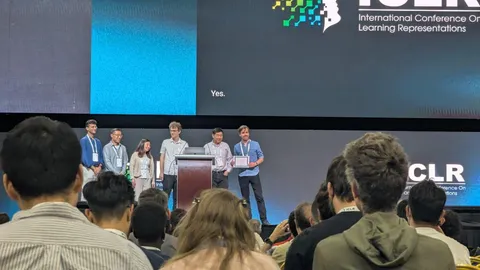
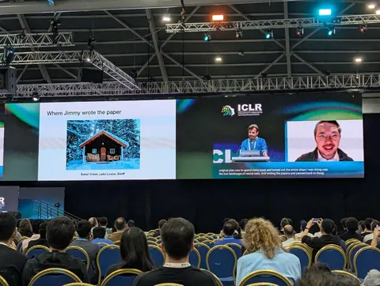

- наша CV-команда в сборе;
- авторы статьи «Adam: A Method for Stochastic Optimization», получившей на ICLR 2025 Test-of-Time Award;
- фото избушки, в которой была написана одна из статей;
- и, конечно же, роботы, куда без них.
CV Time
#YaICLR
